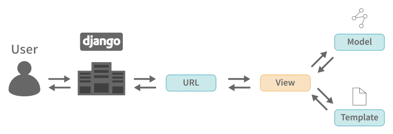

<div class="slide1" style="background-image: url(../../static/images/final/5.jpg);">
    <div class="slide2">
        Django Architecture
        <ul>
            <style>
                li{
                    font-size: 20px !important;
                }
            </style>
            <li>
                Django follows <b>MVT</b> pattern. <b><i>MVT</i></b> is a software design pattern.
                It is a collection of 3 important components. <b>Model View </b> and<b> Template</b>
            </li>
            <li><b>Model : </b>
            Helps to handle Database. Backend in which database is defined
            </li>
            <li><b>Template : </b>
                The Complete User Interface Part
                </li>
            <li><b>View : </b>
                Acts as a controller who interacts with the model to carry data and renders a template.
                </li>
        </ul>
        
    </div>
</div>